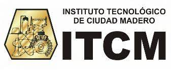
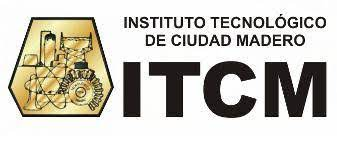

| T1. Desarrollo Agil con PowerApps |
MC. Juan Carlos Hernández Marín |
11:00-13:00 |
CC Salon C |
15 |
Internet, cañon, navegador y office 365 |
Con base a la gran demanda del sector empresarial en cuanto al tiempo reducido para el desarrollo de las aplicaciones, surgen las
herramientas low-code para el desarrollo de aplicaciones, por lo que, este taller tiene como finalidad desarrollar las habilidades para el desarrollo de estas aplicaciones haciendo uso de la suite de Microsoft para disminuir el tiempo de desarrollo de aplicaciones |
| T2. Más Allá del Libro de Texto: ChatGPT en la Enseñanza Moderna |
Ing. Carlos Andrés Delgado Cedillo y Ing. Héctor Rodríguez Arteaga |
11:00-13:00 |
CC Salon H |
15 |
Internet, cañon y navegador |
En este taller, exploraremos el potencial revolucionario de la inteligencia artificial a través de la herramienta ChatGPT en el ámbito educativo. Descubriremos cómo utilizar de manera efectiva esta tecnología para enriquecer la experiencia de aprendizaje y fomentar la creatividad en el aula. Aprenderás estrategias prácticas para integrar ChatGPT en tus lecciones y actividades, así como las mejores prácticas para garantizar un uso educativo responsable. Únetenos en esta sesión informativa y descubre cómo llevar la educación a la era moderna con ChatGPT como tu aliado en el aula. |
 
